Advanced Helpdesk Support Ticket Management System
Complete helpdesk solution with dual portals, multi-channel support, SLA tracking, knowledge base, automated workflows & advanced analytics.
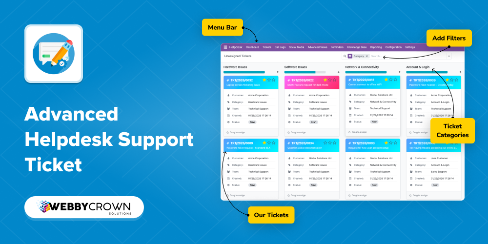
Complete Helpdesk Management Overview
Click the play button to watch the complete walkthrough
Discover Advanced Helpdesk Support Ticket Management System, the comprehensive helpdesk solution for Odoo 17. Experience a complete ticket management system with staff and customer portals, multi-channel support (email, web, phone, social media), SLA tracking and monitoring, knowledge base integration, automated workflows, ticket types and categorization, model and object linking, team management, advanced reporting and analytics, call logging, social media integration, reminders and notifications, escalation rules, and comprehensive configuration settings. Perfect for organizations managing customer support, technical assistance, and service requests with professional-grade helpdesk capabilities.
Core Capabilities:
|
Staff & Customer Portals
Multi-Channel Support
SLA Tracking & Monitoring
Knowledge Base Integration
Automated Workflows
Ticket Types & Categories
Model & Object Linking
Team Management
|
Reporting & Analytics
Call Logging & Tracking
Social Media Integration
Reminders & Notifications
Escalation Rules
Comprehensive Settings
Discuss Panel
REST API
|
✨ Innovation Highlights:
|
Dual Portal System
Multi-Channel Ticket Creation
Real-time SLA Monitoring
|
Intelligent Auto-Assignment
Dynamic Model Linking
Mobile Responsive Design
|
Key Benefits
- Staff & Customer Portals: Separate portals for staff and customers with role-based access, self-service ticket creation, real-time status tracking, and comprehensive ticket management.
- Multi-Channel Support: Accept tickets from email, web portal, phone calls, and social media platforms with automatic ticket creation and unified management.
- SLA Tracking: Configurable SLA policies with automatic calculation, response and resolution time monitoring, breach alerts, and escalation rules based on SLA status.
- Knowledge Base Integration: Self-service support with article management, categorized knowledge base, search functionality, article rating, and FAQ management.
- Automated Workflows: Rule-based automation for ticket assignment, routing, escalation, notifications, status transitions, and follow-up reminders.
- Ticket Types System: Predefined and custom ticket types with type-based workflows, SLA policies, templates, and routing rules for organized ticket management.
- Model & Object Linking: Link tickets to any Odoo model (products, orders, invoices, projects) with quick access to related records and context-aware ticket creation.
- Team Management: Team assignment, workload balancing, skill-based routing, and team performance metrics with dashboards.
- Advanced Analytics: Comprehensive reporting with ticket volume reports, response time analytics, resolution time reports, customer satisfaction metrics, and SLA compliance reports.
- Call Logging: Track phone calls with call-to-ticket conversion, call history management, and integration with ticket workflow.
- Social Media Integration: Create tickets from social media posts with multi-platform support, automatic ticket creation, and social media post tracking.
- Reminders & Notifications: Automated reminder system with configurable rules, email notifications, in-app notifications, and notification preferences.
- Escalation Rules: Automatic escalation based on time, priority, SLA status, or custom conditions with configurable escalation actions.
- Ticket Management: Comprehensive ticket operations including merging, splitting, templates, internal notes, public/private comments, and file attachments.
- Discuss Panel: Built-in discuss panel for ticket messages with customer/team categorization, date tracking, file attachments, and complete message history.
- REST API: Complete REST API for discuss messages with endpoints for CRUD operations, file uploads, and standardized JSON responses for integration.
- Comprehensive Settings: Extensive configuration options for defaults, auto-assignment, SLA, automation, notifications, field requirements, and integrations.
- Mobile Responsive: Fully responsive interface that works seamlessly on desktop, tablet, and mobile devices for both staff and customers.
Modules & Features
Ticket Management & Portal
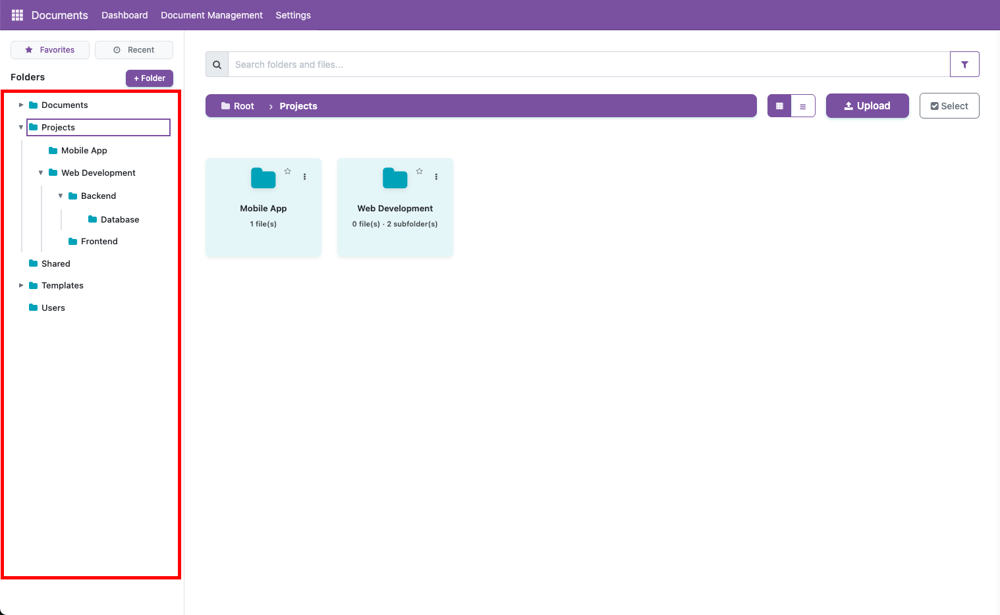
- Customer Portal: Self-service ticket creation, real-time status tracking, communication history, knowledge base access, and profile management
- Staff Portal: Centralized ticket dashboard, advanced filtering and search, team collaboration tools, performance analytics, and bulk operations
- Ticket Operations: Create, update, merge, split tickets with templates, internal notes, public/private comments, and file attachments
- Priority Management: Four priority levels (Low, Medium, High, Urgent) with priority-based SLA and routing
- Categorization: Organize tickets with categories, tags, and ticket types for efficient management
- Status Tracking: Complete status workflow from Draft → New → Assigned → In Progress → Resolved → Closed
- Discuss Panel: Built-in discuss panel for ticket messages with customer and team message types, date tracking, file attachments, and message history
- REST API: Complete REST API for discuss messages with endpoints for creating, reading, updating, and deleting messages, plus file upload support
Multi-Channel Support
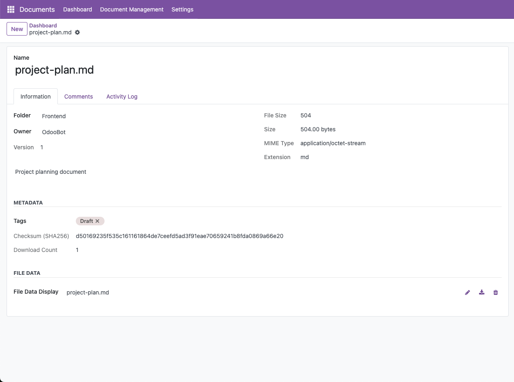
- Email Integration: Automatic ticket creation from emails, email-to-ticket conversion, email notifications, and email templates
- Web Portal: Web-based ticket submission with customizable forms, public ticket creation, and live chat integration capability
- Phone Support: Call logging and tracking, call-to-ticket conversion, call history management, and phone-based ticket creation
- Social Media: Social media ticket creation from Facebook, Twitter, and other platforms with automatic ticket generation
- Unified Management: All channels integrated into a single ticket management system with consistent workflow
SLA Tracking & Monitoring
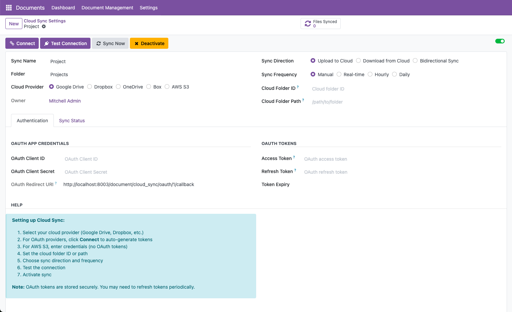
- Configurable SLA Policies: Create multiple SLA policies based on priority, category, ticket type, or team with custom response and resolution times
- Automatic SLA Calculation: Automatic SLA assignment and deadline calculation with working hours support
- Real-time Monitoring: Track SLA status (Met, At Risk, Breached) with visual indicators and time remaining calculations
- SLA Breach Alerts: Automatic notifications at 80% and 90% thresholds, breach alerts, and escalation triggers
- SLA Escalation Rules: Configure escalation actions based on SLA status including notifications, assignments, and priority upgrades
- SLA Reports: Comprehensive SLA compliance reports with response time analytics and resolution time tracking
Knowledge Base Integration
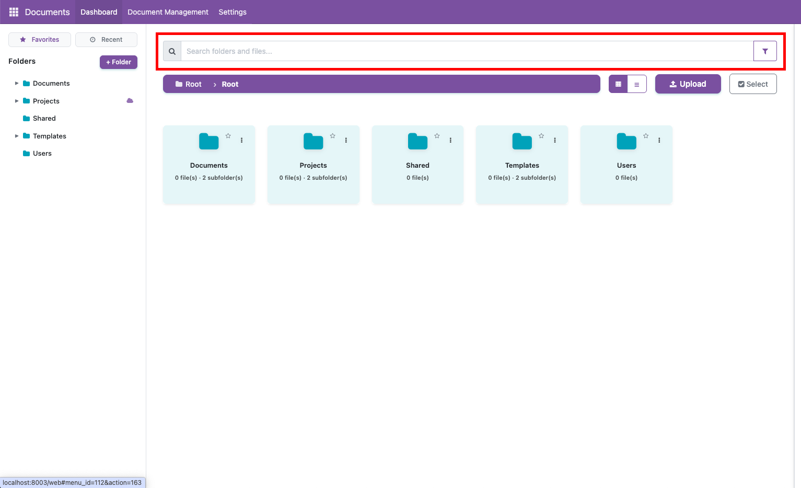
- Article Management: Create, edit, and organize knowledge base articles with categories, tags, and versioning
- Search Functionality: Full-text search across articles with real-time results and advanced filtering
- Article Rating: Customer rating and feedback system for articles to improve content quality
- Related Articles: Automatic suggestions of related articles based on ticket content and category
- FAQ Management: Organize frequently asked questions with categories and search functionality
- Portal Access: Customers can access knowledge base from portal to find solutions before creating tickets
Automated Workflows & Rules
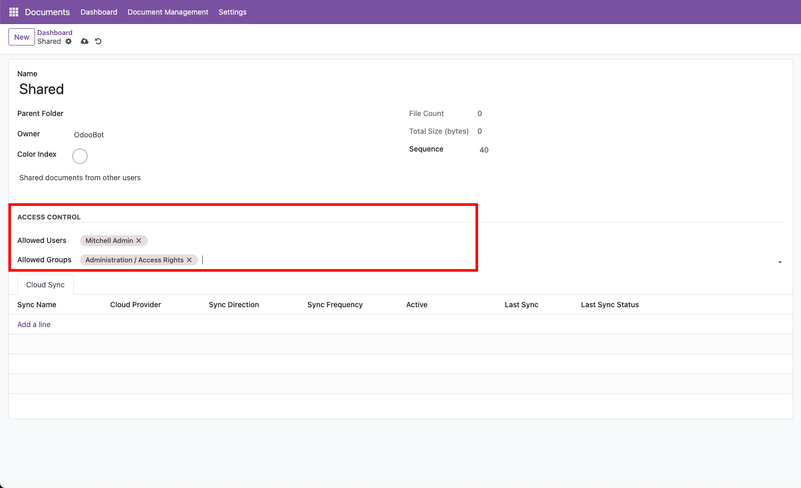
- Automatic Assignment: Rule-based ticket assignment with round-robin, load-based, random, or team-based algorithms
- Workflow Rules: Create complex workflow rules with conditions and actions for ticket creation, updates, and status changes
- Auto-Escalation: Automatic escalation based on time, priority, SLA status, or custom conditions
- Notification Automation: Automated email and in-app notifications based on triggers and user preferences
- Status Transitions: Automatic status changes based on workflow rules and ticket conditions
- Reminder System: Automated reminders for follow-ups, overdue tickets, and scheduled tasks
Dashboard & Analytics
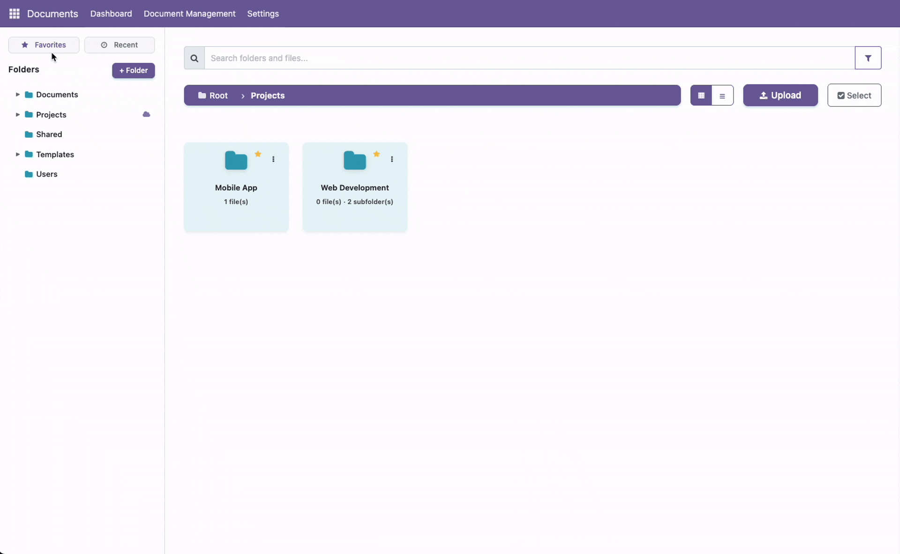
- Main Dashboard: Comprehensive dashboard with KPIs, ticket statistics, charts, and filters for date, team, and state
- Team Dashboard: Team-specific dashboard with team performance metrics, workload distribution, and team analytics
- Ticket Volume Reports: Daily, weekly, monthly ticket statistics with trend analysis and forecasting
- Response Time Analytics: Track average response times, response time distribution, and response time trends
- Resolution Time Reports: Monitor resolution times, resolution rate, and resolution time trends
- Customer Satisfaction: Customer rating and feedback analytics with satisfaction trends and feedback analysis
- SLA Compliance: SLA compliance reports with breach analysis and compliance trends
Model & Object Linking
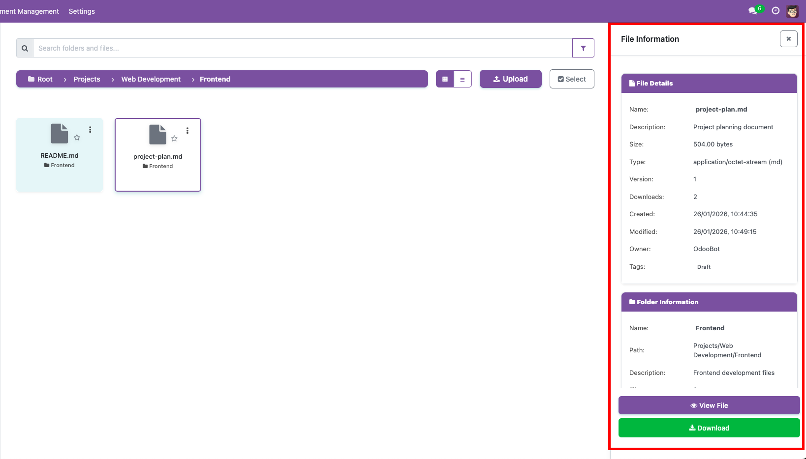
- Dynamic Model Attachment: Link tickets to any Odoo model (products, orders, invoices, projects, partners) based on user access rights
- Quick Access: Quick navigation to linked records directly from ticket view with context information
- Multi-Model Linking: Link multiple models to a single ticket for comprehensive context
- Auto-Linking Rules: Automatic model linking based on ticket content, keywords, or custom rules
- Context-Aware Creation: Pre-populate ticket fields based on linked model context
- Access Control: Only models that users have access to are available for linking
Team Management & Performance
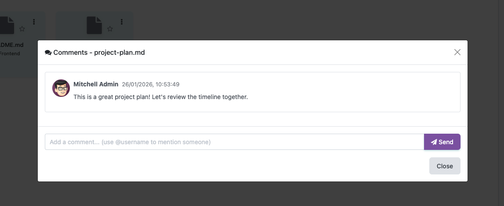
- Team Assignment: Assign tickets to teams with automatic or manual assignment options
- Workload Balancing: Distribute tickets evenly across team members based on current workload
- Skill-Based Routing: Route tickets to team members based on skills, expertise, or category knowledge
- Team Performance Metrics: Track team performance with ticket volume, resolution time, customer satisfaction, and SLA compliance
- Team Dashboards: Team-specific dashboards with team statistics, workload distribution, and performance charts
- Agent Workload: Monitor individual agent workload and ticket distribution for optimal resource allocation
Call Logging & Phone Support
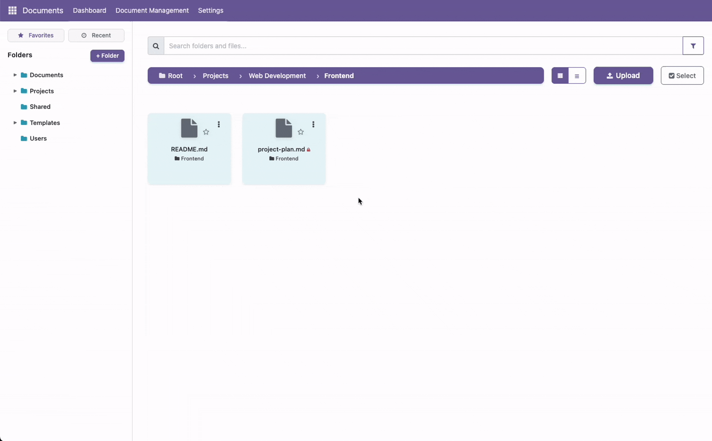
- Call Logging: Log inbound and outbound calls with call details, duration, outcome, and notes
- Call-to-Ticket Conversion: Convert call logs to tickets with automatic ticket creation from call information
- Call History: Complete call history tracking with search, filtering, and reporting capabilities
- Call Analytics: Track call volume, call duration, call outcomes, and call-to-ticket conversion rates
Social Media Integration

- Multi-Platform Support: Integrate with Facebook, Twitter, and other social media platforms
- Automatic Ticket Creation: Automatically create tickets from social media posts and messages
- Post Tracking: Track social media posts, replies, and engagement metrics
- Platform Configuration: Configure multiple social media platforms with API credentials and sync settings
- Automated Sync: Scheduled synchronization of social media posts with configurable frequency
Discuss Panel & REST API
- Discuss Panel: Integrated discuss panel in ticket form view for managing customer and team communications with message history, date tracking, and attachment support
- Message Types: Categorize messages as Customer or Team messages for better organization and tracking
- File Attachments: Attach files to messages with support for multiple file types and sizes
- Message History: Complete message history with chronological ordering, author tracking, and search capabilities
- REST API Endpoints: Full REST API with GET, POST, PUT, DELETE endpoints for managing messages programmatically
- File Upload API: Dedicated endpoint for uploading attachments with support for multiple file formats
- JSON Responses: All API endpoints return standardized JSON responses with success/error indicators
- Authentication: Secure API access with Odoo session-based authentication and access control
Configuration & Settings
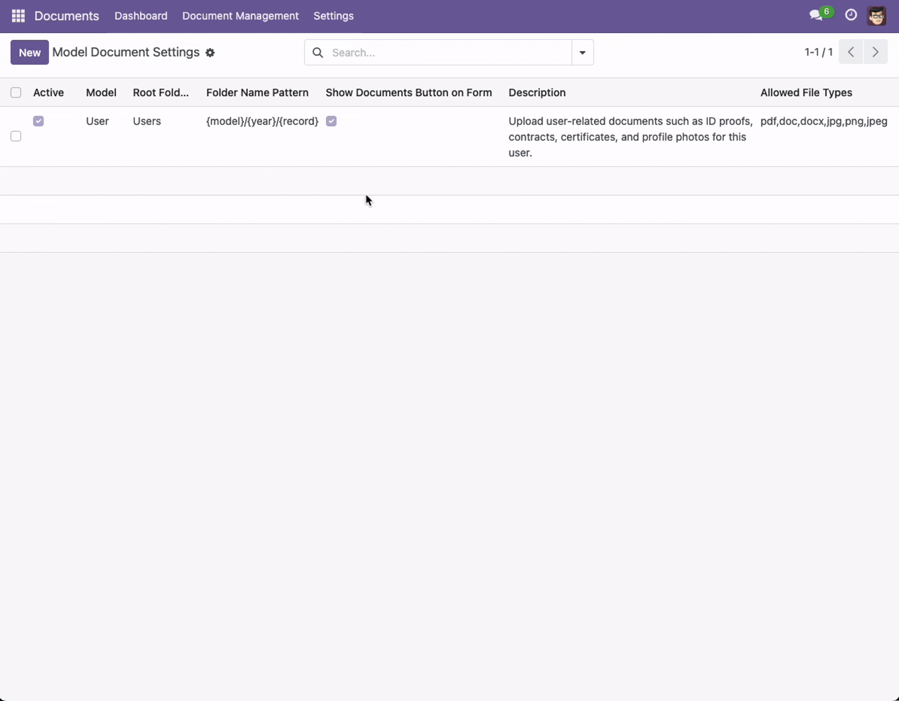
- General Settings: Configure default values for priority, state, channel, team, category, and ticket type
- Auto-Assignment: Configure automatic ticket assignment with round-robin, load-based, random, or team-based methods
- SLA Configuration: Set default response/resolution times, default SLA policies, and working hours settings
- Automation Settings: Enable/disable escalation, reminders, workflows, and auto-close functionality
- Notification Settings: Configure notification toggles for assignment, status change, customer updates, and SLA breach
- Field Requirements: Set mandatory fields for category, priority, and ticket type
- Integration Settings: Enable/disable portal, rating, knowledge base, social media, and call logging features
- Support Contact: Configure support email and phone for display in portal and public views
FAQs
1. What is Advanced Helpdesk Support Ticket Management System?
Advanced Helpdesk Support Ticket Management System is a comprehensive helpdesk solution for Odoo 17 featuring staff and customer portals, multi-channel support (email, web, phone, social media), SLA tracking and monitoring, knowledge base integration, automated workflows, ticket types and categorization, model and object linking, team management, advanced reporting and analytics, call logging, social media integration, reminders and notifications, escalation rules, and comprehensive configuration settings.
2. How does multi-channel support work?
The system supports ticket creation from multiple channels including email (automatic ticket creation from emails), web portal (web-based ticket submission), phone calls (call logging with ticket conversion), and social media (automatic ticket creation from social media posts). All channels are integrated into a unified ticket management system with consistent workflow and tracking.
3. How does SLA tracking work?
SLA tracking allows you to configure multiple SLA policies based on priority, category, ticket type, or team. The system automatically assigns SLA policies, calculates response and resolution deadlines, monitors SLA status (Met, At Risk, Breached), sends alerts at 80% and 90% thresholds, triggers escalation rules on breach, and provides comprehensive SLA compliance reports. SLA calculation supports both 24/7 and working hours modes.
4. Can customers create tickets themselves?
Yes! The system includes a comprehensive customer portal where customers can create tickets, track ticket status in real-time, view communication history, access knowledge base articles, manage their profile, and submit tickets via multiple channels. The portal provides a self-service experience while maintaining security and access control.
5. How does automatic ticket assignment work?
The system supports multiple automatic assignment methods including round-robin (assigns to member with oldest assignment), load-based (assigns to member with least open tickets), random (random assignment), and team-based (assigns to team leader or first member). You can configure the assignment method in settings, and the system will automatically assign tickets based on the selected method when tickets are created.
6. What is model and object linking?
Model and object linking allows you to link tickets to any Odoo model (products, sale orders, purchase orders, invoices, projects, partners, etc.) and specific records within those models. This provides context-aware ticket creation, quick access to related records, and comprehensive ticket information. You can link multiple models to a single ticket, and the system supports automatic linking based on rules.
7. How does the knowledge base integration work?
The knowledge base integration provides a self-service support system with article management, categorized organization, full-text search, article rating and feedback, related article suggestions, FAQ management, and portal access. Customers can search for solutions before creating tickets, and staff can create and manage knowledge base articles to reduce ticket volume and improve customer satisfaction.
8. What reporting and analytics are available?
The system includes comprehensive reporting and analytics including ticket volume reports (daily, weekly, monthly), response time analytics, resolution time reports, customer satisfaction metrics, team performance dashboards, SLA compliance reports, and custom report builder. All reports support filtering, grouping, and export capabilities for detailed analysis.
9. How does escalation work?
Escalation rules can be configured based on time, priority, SLA status, or custom conditions. When escalation conditions are met, the system can automatically notify users or teams, assign tickets to different teams/users, upgrade priority, change ticket state, or execute custom actions. Escalation rules support multiple escalation levels and can be configured to repeat at intervals.
10. What configuration options are available?
The system includes comprehensive configuration settings for general defaults (priority, state, channel, team, category, ticket type), ticket numbering (prefix and format), auto-assignment (enable toggle, method, max tickets per agent), SLA configuration (enable tracking, default times, policies, working hours), automation (escalation, reminders, workflows, auto-close), notifications (assignment, status change, customer updates, SLA breach), field requirements (category, priority, ticket type), integrations (portal, rating, KB, social media, call logging), and support contact information (email and phone).
11. Is the system mobile responsive?
Yes! The system is fully responsive and works seamlessly on desktop, tablet, and mobile devices. Both the staff portal and customer portal are optimized for mobile access, allowing users to create tickets, track status, and manage tickets from any device.
12. What is the Discuss Panel feature?
The Discuss Panel is an integrated messaging system within tickets that allows customers and team members to exchange messages. It supports message categorization (Customer/Team), date tracking, file attachments, and maintains a complete message history. Messages are displayed chronologically with author information, making it easy to track conversations and maintain context throughout the ticket lifecycle.
13. Is there a REST API for discuss messages?
Yes! The system includes a complete REST API for managing discuss messages. The API provides endpoints for GET (retrieve messages), POST (create messages), PUT (update messages), DELETE (delete messages), and file upload. All endpoints return standardized JSON responses with proper error handling. The API uses Odoo's session-based authentication and respects access control rules. Full API documentation is available in the API_DOCUMENTATION.md file with examples and response formats.
Contact & Support
Have Any Question ?
Sales : +91 (942) 867-7503